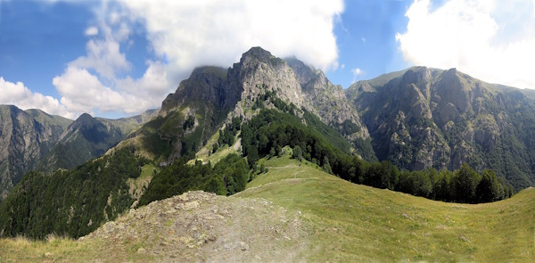
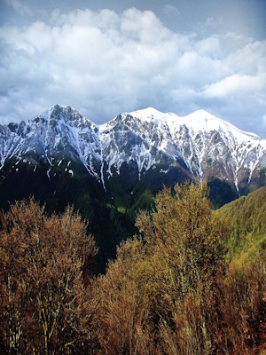

What is a national park, and what purpose do they serve?
National parks are nature reserves, dedicated to the utmost protection of the local environment, and space. They are legally protected, and regularly patrolled.
|  |  |  |
Largest National Parks in Bulgaria
1 : Rila National Park: The largest national park in Bulgaria, covering over 81,000 hectares (81,046 ha). It is home to Musala, the highest peak on the Balkan Peninsula (2925m), and the famous Seven Rila Lakes. 2 : Central Balkan National Park: Situated in the heart of Bulgaria within the Balkan Mountains (Stara Planina), it protects one of the largest protected areas in Europe, including Botev Peak (2376m). 3 : Pirin National Park: Located in the Pirin Mountains in southwest Bulgaria, this park is known for its rugged alpine scenery, glacial lakes, and Vihren Peak (2914m).